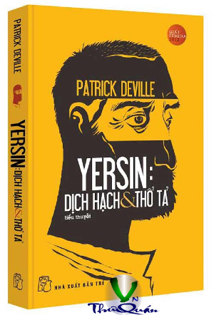

« Back
Yersin - Dịch Hạch & Thổ Tả
By Patrick Deville

GIỚI THIỆU
Lời Tựa
Chuyến Bay Cuối Cùng
Lũ Côn Trùng
Ở Berlin
Ở PARIS
KẺ BỊ TỐNG TIỄN
Ở NORMANDIE
MỘT TÒA THÁP CAO BẰNG SẮT Ở TRUNG TÂM THẾ GIỚI
MỘT BÁC SĨ TRÊN TÀU
Ở MARSEILLE
Trên Biển
Những Cuộc Đời Song Chiếu
Albert & Alexandre
Bay
Ở HẢI PHÒNG
BÁC SĨ CỦA NGƯỜI NGHÈO
TRƯỜNG CHINH
Ở PHNÔM PÊNH
MỘT LIVINGSTONE MỚI
Ở ĐÀ LẠT
ARTHUR & ALEXANDRE
VỀ NƠI NGƯỜI XÊ ĐĂNG
Ở HỒNG KÔNG
Ở Nha Trang
Ở Madagascar
Vắcxin
Ở Quảng Đông
Ở Bombay
Cuộc Đời Đích Thực
Ở Hà Nội
Cuộc Tranh Cãi Về Gà
Một Con Tàu Trong Nạn Hồng Thủy
Một Tiền Đồn Của Tiến Bộ
Ông Vua Cao Su
Cho Hậu Thế
Rau Và Quả
Ở Vaugirard
Máy Móc Và Dụng Cụ
Ông Vua Canhkina
Alexandre & Louis
Gần Như Một Dwem
Ngoài Hiên
Bóng Ma Của Tương Lai
Cái Nhóm Nhỏ
Biển
Lời Cảm Ơn - Lời Bạt